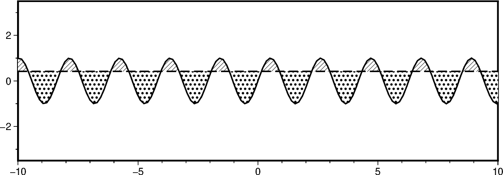
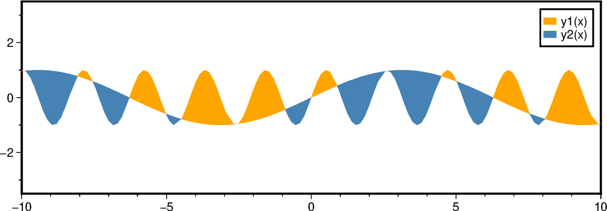
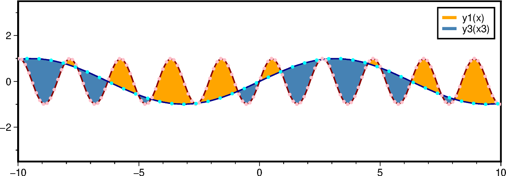

Note
Go to the end to download the full example code.
Fill area between curves
The pygmt.Figure.fill_between method fills the area between two curves y1 and
y2. Different fills (colors or patterns) can be used for the areas y1 > y2 and
y1 < y2. The two curves can be co-registered or have different x-coordinates. To plot
an anomaly along a track use pygmt.Figure.wiggle and see the gallery example
Wiggle along tracks.
For filling the areas between the two curves use the fill and fill2 parameters
to set different fills for the areas with y1 > y2 and y1 < y2, respectively. Use the
label and label2 parameters to set the corresponding legend entries. In addition
to filling the areas, we can draw the outline curves. Use the pen and pen2
parameters to set different lines for the two curves y1 and y2, respectively.
To compare a curve y1(x) to a horizontal line, pass the desired y-level to y2.
fig = pygmt.Figure()
fig.basemap(region=[-10, 10, -3.5, 3.5], projection="X15c/5c", frame=True)
fig.fill_between(
x=x,
y=y1,
y2=0.42,
fill="p8",
fill2="p17",
pen="1p,black,solid",
pen2="1p,black,dashed",
)
fig.show()

To compare two co-registered curves y1(x) and y2(x) pass a sequence with the same
length as the inputs for x and y to y2.
fig = pygmt.Figure()
fig.basemap(region=[-10, 10, -3.5, 3.5], projection="X15c/5c", frame=True)
fig.fill_between(
x=x, y=y1, y2=y2, fill="orange", fill2="steelblue", label="y1(x)", label2="y2(x)"
)
fig.legend()
fig.show()

Now, we use two non-co-registered curves, e.g., the two curves have different
x-coordinates. For providing the x-coordinates for the second curve, use
parameter x2. Via the legend_pen parameter the appearance in the legend
can be changed to draw the legend entries as colored lines (using the fill colors)
instead of filled and outlined boxes.
fig = pygmt.Figure()
fig.basemap(region=[-10, 10, -3.5, 3.5], projection="X15c/5c", frame=True)
fig.fill_between(
x=x,
y=y1,
x2=x3,
y2=y3,
fill="orange",
fill2="steelblue",
pen="1p,darkred,solid",
pen2="1p,darkblue,solid",
label="y1(x)",
label2="y3(x3)",
legend_pen=True,
)
# Mark sampling points
fig.plot(x=x, y=y1, style="c0.1c", fill="pink")
fig.plot(x=x3, y=y3, style="c0.1c", fill="cyan")
fig.legend()
fig.show()

Total running time of the script: (0 minutes 0.392 seconds)